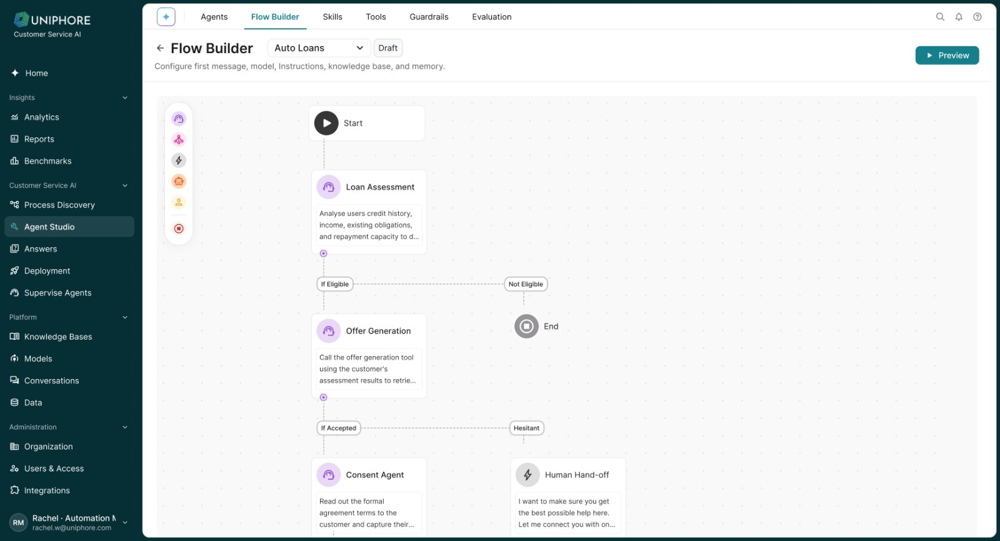
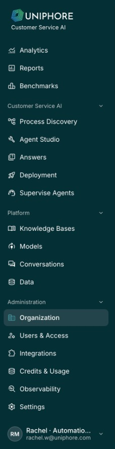

AI-Native Product Design · 2025–2026
How I used structured requirements, existing design-system context, Claude Code, Figma and working prototypes to move from product thinking to functional experiences.
I began exploring AI-assisted coding as part of the design process itself — not to generate finished UX, but to shorten the distance between understanding a problem, designing an experience, using it and improving it.

The shift
For complex enterprise workflows, I could design the intended experience in Figma — but some problems only became obvious once I could actually use it.
Interaction behaviour, responsive states, navigation and longer end-to-end flows were easier to evaluate in a functioning interface than in a static one. So AI-assisted coding became part of the design process itself, not a separate experiment after it.
Before AI
Before asking Claude to build anything, I structured the product context — what we were solving, who it was for, the jobs users needed to accomplish, key journeys, requirements, constraints and expected behaviour.
The goal wasn’t to ask AI to invent the UX. It was to give it enough structured context to help execute and test the UX I was already designing.
What a UXRD could cover — the point was giving Claude structured product context, not asking it to invent the UX.
“AI accelerated the execution.
It didn’t replace the product thinking.”
Design system as context
Generating an interface with AI is easy. Generating something that actually belongs inside an existing enterprise product is much harder.
Our components and patterns already existed in the design system, Storybook and our codebase — so Claude could work from established product patterns instead of inventing a new UI language.

Real project
ATS Reimagining applied this same workflow to a real product problem: rethinking core workflows in an existing Applicant Tracking System. I used structured requirements, our existing design-system components and Claude Code to move from a defined product direction to a working experience I could use and critique.
Replace with a large, readable capture of the reimagined ATS interface — the single clearest artifact of the working experience.
Clarify the problem, structure it into requirements, make the UX decisions, build with Claude, use the result like a real user would, critique it honestly, then change what needed to change.
Claude reduced the time between making a product decision and experiencing it in a functioning interface. That gave me more opportunities to evaluate workflows, behaviour and edge cases instead of repeatedly recreating static screens.
AI could implement an instruction quickly, but it couldn’t decide whether that interaction was actually right for the user. Hierarchy, workflow simplification, edge cases, responsive behaviour and whether an experience felt coherent still required design judgement.
Iteration
Once an experience was functional, using it surfaced problems that are hard to see in static screens — and deciding what to do about them was still design work, not something Claude could decide on its own.
Choosing the right surface
For fast visual exploration and collaborative review, Figma was usually the better surface. For interaction-heavy workflows, a working prototype made behaviour, states and end-to-end flows easier to evaluate. I moved between them depending on which helped me make the next decision faster.
Prototypes were reviewed like any other product work — through Figma comments or direct walkthroughs — and lived in GitHub rather than on one person’s machine, so feedback could move back into the build without getting lost. Not every comment became a change, and not every AI-generated change was accepted.
“Automation shortened the feedback loop.
It didn’t remove the designer from it.”
The loop
This is a loop, not a one-way handoff.
Tools used along the way — secondary to the process itself:
What changed
AI reduced the distance between an idea and something I could actually use. But deciding what to build, how an experience should behave, whether an AI-generated solution made sense, and when something needed manual design judgement still remained my responsibility.
Not a designer who designs in Figma and hands it to engineering — one who can understand, structure, design, build with AI, use, critique, iterate and share. AI-generated output still needs product and design judgement to become a real experience.